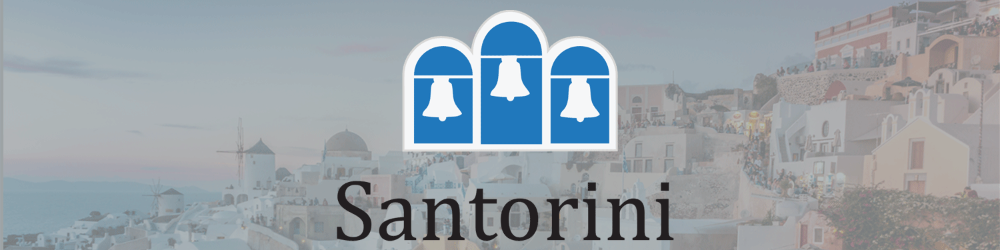
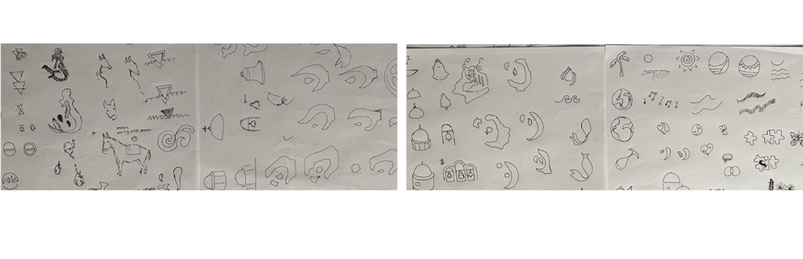
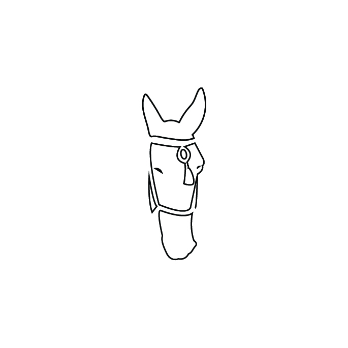
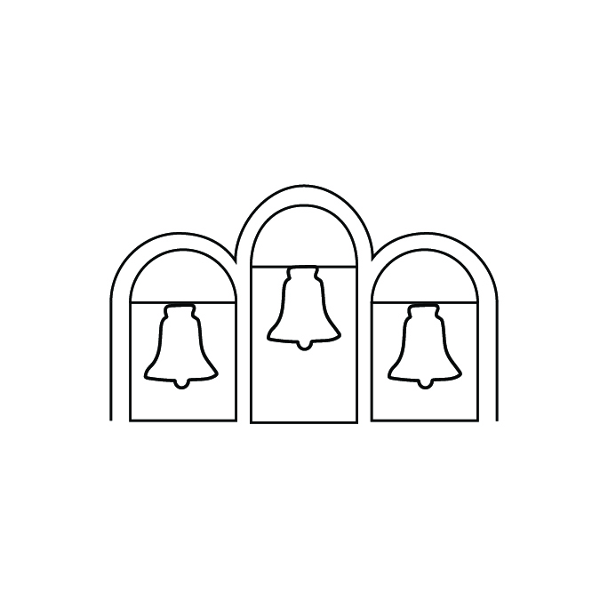
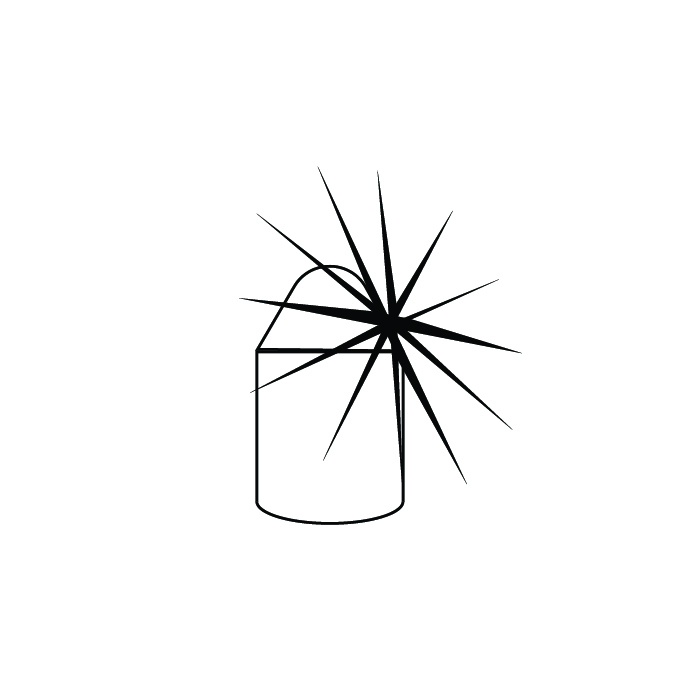
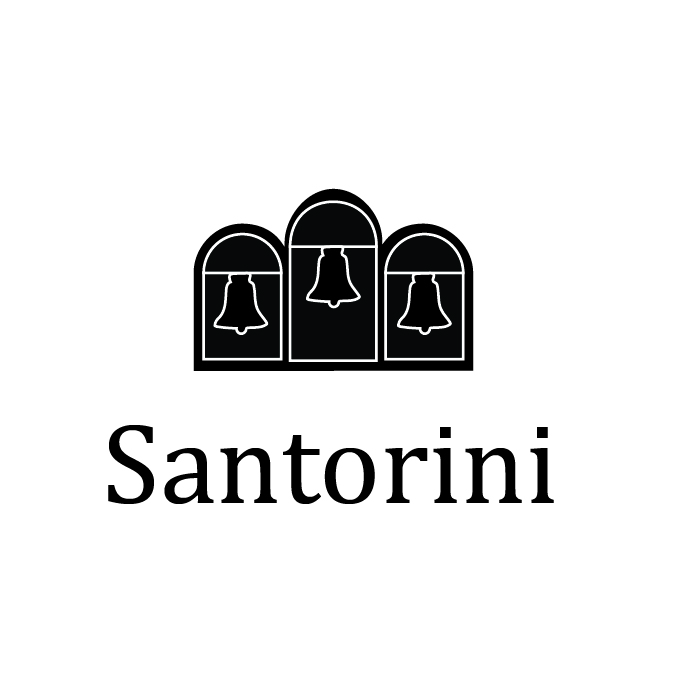
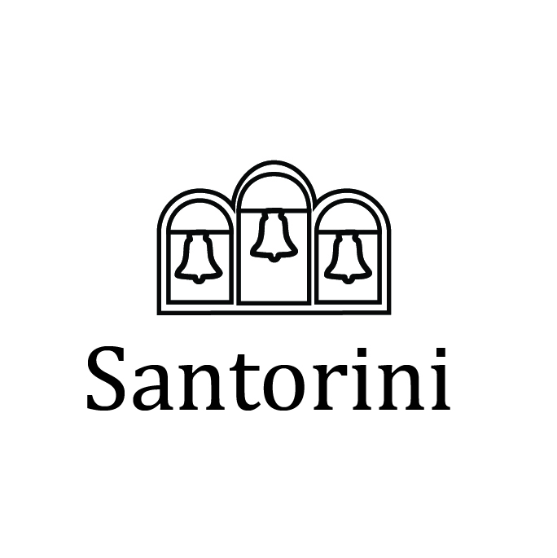
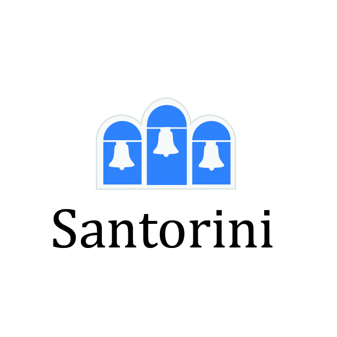

Santorini
Logo Design
Sketches

Into Illustrator
Three Ideas for Santorini Design
The donkey represents the way people use them for traveling around the areas in Santorini. The bells represents Santorini and the church As for the windmill they are know to be the oldest and are used for making bread back in the days but now are use for people to stay when visiting Santorini.



Final Logo


